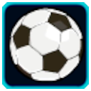
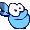

Kung Foot
Crossover: Rayman
Los jugadores aparecerán en su lado del mapa. Deberán enfrentarse al equipo enemigo lanzando la pelota a la porteria contraria. El primer equipo en llegar a 7 puntos ganará.